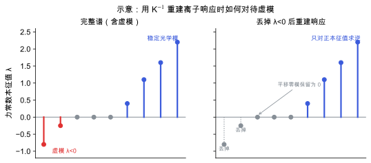

位置、路径与目录
响应张量重建中的虚模
概念节点领域：响应与张量性质研究线：压电与响应计算v0.1 · 2026-11-18
草稿已有正文，但来源和推导还没有核查完，不能当作定论。
力常数矩阵出现负本征值时，离子对弹性/压电/介电的贡献还能不能按 K 的逆来算；丢掉虚模继续算，和先判定不稳定，分别改变了什么。
弹性、压电、介电的离子弛豫贡献都写成“力引起多少位移”，也就是力常数矩阵 K 的逆（见 从能量到结构与响应、压电张量）。这个写法默认：在去掉整体平移之后，K 的其余本征值全为正——结构是谐近似下的局部极小。
一旦出现虚模（\omega^{2}<0，亦即 K 有负本征值），“沿该模方向位移，能量下降”，公式里的 K^{-1} 不再对应一个稳定的谐振子响应。此时有两条常见做法：
- 停下来：把结构标成不稳定，不报告弛豫离子张量（或只报告夹持离子项）。
- 丢掉负本征值，只对正本征值子空间求逆：程序仍给出一个数字，但那是“假装这些不稳定方向不存在”的投影结果，不是完整 K 上的响应。

示意：左为含虚模的力常数本征值谱；右为丢掉负本征值后再对正本征值求逆。
| 符号 | 是什么 | 图里对应哪部分 |
|---|
| \lambda | 力常数矩阵本征值 | 纵轴短棒高度 |
| \lambda<0 | 虚模（不稳定方向） | 左图红色短棒；右图灰色虚线表示被丢掉 |
| \lambda=0 | 平移零模（声学和规则要求） | 中间贴着零线的灰点 |
| \lambda>0 | 稳定光学模 | 蓝色短棒；右图只对它们求逆 |
把 K 写成谱分解（平移零模已去掉或单独处理）：
K = \sum_m \lambda_m\, e_m e_m^{\mathsf T}
其中 \lambda_m 是本征值，e_m 是对应本征向量。正定子空间上的伪逆是
K^{+} = \sum_{\lambda_m > 0} \frac{1}{\lambda_m}\, e_m e_m^{\mathsf T}
用 K^{+} 代替 K^{-1} 去组合 Z^{*}、\Lambda 等，等于强制忽略所有 \lambda_m\le 0 的方向对离子位移的贡献。若某个软而稳定的模 \lambda_m 很小，它的贡献本来就大；若它跨过零变成虚模，物理上应先回到结构优化，而不是继续放大或砍掉这一项。
- 压电流水线：先看 \Gamma 点光学模有没有明显虚频；有则结构不在极小，弛豫离子 e 和由此得到的 d 不应当作该结构的稳定响应。
- 程序若自动丢掉负本征值：输出的离子块可能和“手算完整谱”不一致。比较两套后处理时，先确认双方对虚模的处理是否相同，避免把同一物理量算了两遍或漏算。
- 假虚频：DFPT 与有限差分（冻结声子）不一致、或虚模与平移有明显重叠时，优先提高精度、检查声学求和规则，而不是直接投影（见 声子与晶格动力学、有限差分与微扰方法）。
- 把投影结果当成完整物理响应：丢掉虚模后得到的 d 可能看起来“更合理”，但它描述的是另一个被改过的力常数矩阵。
- 小虚频与真不稳定不分：数值噪声造成的极小虚频，和提高精度后仍在、且 DFPT 与冻结声子一致的虚频，处理完全不同。
- 声学模被误判成光学虚模：平移零模因数值破坏略微偏离零，可能被标成“虚频”；先检查声学求和规则与模向量是否接近刚体平移 [Gonze & Lee 1997]。
相关条目从能量到结构与响应、压电张量、声子与晶格动力学
参考资料
论文Wu, Vanderbilt & Hamann 2005
X. Wu, D. Vanderbilt, D. R. Hamann, Systematic treatment of displacements, strains, and electric fields in density-functional perturbation theory, Phys. Rev. B 72, 035105 (2005)
位置：压电张量的夹持离子项与离子弛豫项；与弹性、介电张量的关系
尚未实际查阅，目前只是拟查阅书目
论文Baroni 2001
S. Baroni, S. de Gironcoli, A. Dal Corso, P. Giannozzi, Phonons and related crystal properties from density-functional perturbation theory, Rev. Mod. Phys. 73, 515 (2001)
位置：能量对原子位移、应变和电场的二阶导数；与有限差分的关系
尚未实际查阅，目前只是拟查阅书目
论文Gonze & Lee 1997
X. Gonze, C. Lee, Dynamical matrices, Born effective charges, dielectric permittivity tensors, and interatomic force constants from density-functional perturbation theory, Phys. Rev. B 55, 10355 (1997)
位置：玻恩有效电荷、ε∞ 与 ε0 的定义；声学求和规则；模式分解
尚未实际查阅，目前只是拟查阅书目
论文雷达里的相关论文
按关键词匹配，最近的在前；点开在雷达里阅读。
关联与核验
关联
用于解释草稿
本节点 用于解释 压电张量
离子压电项里的力常数逆只在去掉平移后正定的子空间上成立；出现虚模时必须先处理稳定性或显式做正定投影，不能把投影结果默认为完整物理响应。
成立条件讨论弛豫离子压电（或同样含 K 逆的离子弹性/静态介电）时
依据：Wu, Vanderbilt & Hamann 2005
需要先理解草稿
声子与晶格动力学 是 本节点 的先修
先理解虚频、声学求和规则与光学模，才能判断响应重建里遇到的负本征值是数值假象还是结构不稳定。
成立条件无额外条件
核验与修订
暂无核验记录。
修订记录
- v0.12026-11-18初稿：虚模与力常数逆公式的前提、丢掉负本征值的后果、与数值假虚频的分辨
发现问题
在 GitHub 上公开提交纠错，会附上节点编号和版本，不含你的笔记。
提交纠错